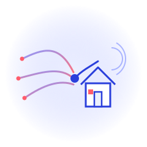
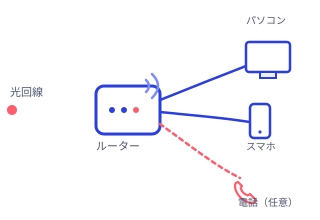

FIBER INTERNET
今のネット、遅いと感じたら。
NTTの光回線「フレッツ光」を無料相談でチェック
「フレッツ光」は、NTT東日本・NTT西日本が全国で提供する光ファイバーのインターネット回線サービスです。このページでは、株式会社ビジョンが運営する申し込み窓口「ヒカリ電話ドットコム」をご紹介します。お住まいのエリア・建物タイプに合った料金プランや工事日程を、無料の相談・見積もりで確認できます。
無料相談・お見積もりを見る※本ページは広告（アフィリエイトリンク）を含みます。当サイト（NAO WEB LAB）が独自に作成した紹介ページであり、サービスの提供元・申し込み窓口ではありません。
AT A GLANCE
サービスの基本情報
月額料金の一例（税抜・集合住宅向け、公式サイトより）
申し込みから利用開始までの目安（エリアにより変動）
電話・フォームでの無料相談受付窓口
こんなお悩み、ありませんか？
- 今使っているインターネットの速度に不満がある
- 引っ越しを機に、ネット・電話・テレビをまとめて見直したい
- 料金がエリアや建物タイプで違うらしく、自分の場合いくらか分からない
- 回線とプロバイダ、契約先が分かれていて何から手をつければいいか分からない
- 工事にどれくらい時間がかかるのか不安
そんな方に知っていただきたいのが、NTT東日本・NTT西日本が提供する光ファイバー回線「フレッツ光」です。
ABOUT
「フレッツ光」とは
「フレッツ光」は、NTT東日本・NTT西日本が全国で提供している光ファイバーを使ったインターネット回線サービスです。回線のみの契約に加え、プロバイダとの契約を組み合わせて利用します。オプションで、ひかり電話（IP電話）やテレビサービスを追加することもできます（対応状況はお住まいの建物・エリアにより異なるため、公式サイトでご確認ください）。今回ご紹介する申し込み窓口は、株式会社ビジョンが運営する「ヒカリ電話ドットコム」です。
FOR YOU
こんな方におすすめです
- 自宅のインターネット回線を光回線に切り替えたい方（推定）
- 引っ越し・新生活でこれからネット回線を契約する方（推定）
- 在宅ワークやオンライン会議で、回線の安定性を重視する方（推定）
- 固定電話やテレビもまとめて見直したい方（推定）
- 店舗・オフィスのインターネット回線を検討している法人のご担当者
FEATURES
フレッツ光の主な特徴

光ファイバーによる接続
NTT東日本・NTT西日本が提供する光ファイバー回線を使用。回線契約に加え、プロバイダとの契約を組み合わせて利用します。
電話・テレビの追加も可能
必要に応じて、ひかり電話やテレビサービスをオプションで組み合わせられます（対応状況は公式サイトでご確認ください）。
複数台での同時利用
家庭利用では5〜10台程度の同時接続が目安とされています。台数が多い場合は増設や法人向けプランの相談も可能です。
24時間365日の無料相談
電話・オンラインフォームから、無料の相談・見積もりを受け付けています。
PRICE
料金の目安
2026年9月に確認できた公式サイトの案内では、集合住宅（マンション・アパート）向けの一例として、月額2,915円（税抜）からとされていました。料金は東日本・西日本のエリアや、戸建て・集合住宅といった建物タイプによって異なり、回線契約とは別にプロバイダとの契約も必要です。正確な料金は、公式サイトの無料見積もり・シミュレーションでご確認ください。
IMPORTANT
申し込み前に知っておきたいポイント
- 料金はお住まいのエリア（東日本／西日本）や建物タイプ（戸建て／集合住宅）によって異なります。
- 回線契約に加えて、別途プロバイダとの契約が必要です。
- 申し込みから利用開始までは、公式サイトの案内で平均2週間〜1ヶ月程度とされています。エリアや混雑状況により1ヶ月を超える場合もあります。
- 急ぎでインターネットが必要な場合、ポケットWiFiの無料レンタル案内があるとのことです（公式サイトより）。
- 初期費用やキャンペーン内容は時期により変動するため、お申し込み前に必ず公式サイトの最新情報をご確認ください。
HOW TO
申し込みまでの流れ
- 1
公式窓口へ無料相談・お問い合わせ
CTAボタンから公式サイトに移動し、電話またはフォームから相談内容を伝えます。
- 2
お住まいの状況をヒアリング
エリアや建物タイプなどをもとに、料金プランや対応状況の案内を受けます。
- 3
工事日程を調整する
必要な工事・切り替え手続きのスケジュールを窓口と相談します。
- 4
フレッツ光の利用を開始
開通後、インターネット（必要に応じて電話・テレビ）をご利用いただけます。
FAQ
よくある質問
NTT東日本・NTT西日本が提供する、光ファイバーを使ったインターネット回線サービスです。回線の契約に加えてプロバイダとの契約が必要で、オプションでひかり電話やテレビサービスも利用できます（対応状況はお住まいのエリア・建物により異なります）。
お住まいのエリア（東日本／西日本）や建物タイプ（戸建て／集合住宅）によって異なります。2026年9月に確認できた公式サイトの案内では、集合住宅向けの一例として月額2,915円（税抜）からとされていました。正確な金額は公式サイトの無料見積もりでご確認ください。
公式サイトの案内では、平均して2週間から1ヶ月程度とされています。エリアや混雑状況によっては1ヶ月を超える場合もあり、急ぎの場合はポケットWiFiの無料レンタル案内もあるとのことです。
可能です。公式サイトの案内では、同時接続台数の目安は5〜10台程度とされており、台数が多い場合は回線の増設や法人向けプランの相談をすすめられています。
ご利用にあたっての注意事項
- 本ページは、A8.net経由のアフィリエイトプログラムを利用してNAO WEB LABが独自に作成した紹介ページです。「フレッツ光」提供元のNTT東日本・NTT西日本、および申し込み窓口を運営する株式会社ビジョンが制作・監修したものではありません。
- 掲載内容は2026年9月時点で確認できた公式サイトの情報をもとに作成しています。料金・プラン内容・キャンペーンなどのサービス内容は変更される場合がありますので、お申し込み前に必ず公式サイトで最新情報をご確認ください。
- 対応可否・工事の要否・費用は、回線状況やお住まいのエリアにより異なります。最終的なご契約内容は、公式窓口にご確認のうえご判断ください。
今のネット環境、無料相談で見直してみませんか。
お住まいのエリア・建物タイプに合った料金プランや工事スケジュールは、公式サイトの無料相談・お見積もりですぐに確認できます。
公式サイトで無料相談・お見積もり